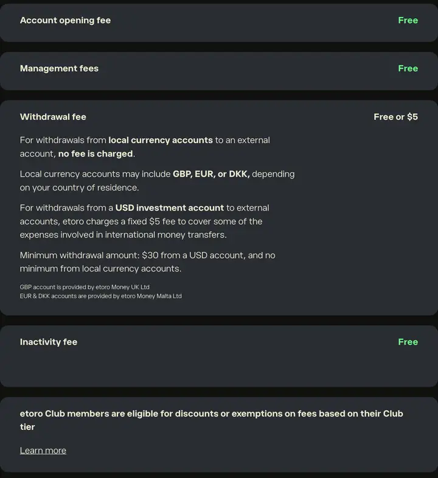
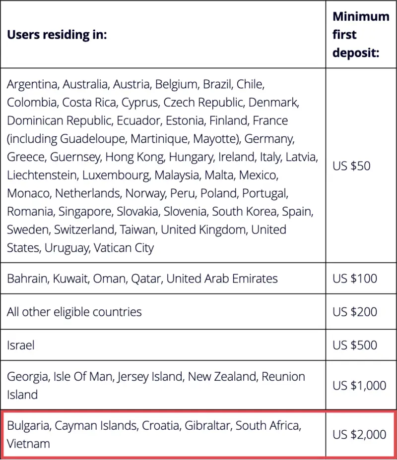
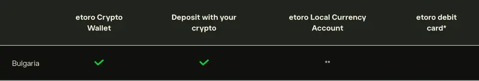

eToro мнения 2026: оценки на потребителите, такси и сигурност от България
eToro мнения 2026: потребителите дават на eToro 4,0 от 5 в Trustpilot (32 216 отзива) и 4,4 в българския App Store, а нашата оценка е 4,0 от 5. Платформата е регулирана в ЕС и е лесна за начинаещи. От България първият депозит е минимум 2000 USD, сметката се води в долари, а най-честите оплаквания са за сметки, спрени за проверка при теглене.
Петте оценки са с еднаква тежест. Как оценяваме
Подходящ за: начинаещи, които искат акции, ETF и криптовалути в едно приложение, и за хора, които искат да копират други инвеститори.
Не е за вас, ако: искате да започнете с по-малко от 2000 USD, търсите интерфейс на български или държите сметката да е в евро.
eToro накратко за инвеститор от България
- Регулатор
- CySEC, лиценз 109/10 (eToro (Europe) Ltd)
- MiCA
- лиценз от CySEC, в регистъра на ESMA от 16.01.2025, важи за България
- Първи депозит от България
- 2000 USD, всеки следващ от 50 USD
- Акции
- 1 USD при покупка и 1 USD при продажба (борси в САЩ и Европа)
- ETF
- без комисиона
- Криптовалути
- 1% при покупка и 1% при продажба
- Теглене
- 5 USD от сметката в долари, минимум 30 USD
- Неактивност и поддръжка на сметка
- без такса
- Валута на сметката
- USD; обмяна от евро 150 пипа (около 1,3%)
- Сметка в евро за България
- „свържете се с нас“ по таблицата на eToro
- Демо
- 100 000 USD виртуални пари
- Български език
- няма (сайт и приложение)
- Оценки на приложенията
- App Store България 4,4 (726 оценки), Google Play 3,9 (157 хил. отзива)
Проверено на 16.10.2026 в таксите на eToro, помощния център, страницата за регулация и регистъра на ESMA.
Ако отворите сметка през връзка от тази страница, Ecoinomy може да получи комисиона от eToro. Това не променя оценката и не влияе на данните по-долу. eToro е единствената платформа в сравнението, с която работим.
ДЗР са сложни инструменти и носят висок риск от бърза загуба на пари поради ливъридж. 51% от сметките на инвеститорите на дребно губят пари при търговия с ДЗР (CFD) с този доставчик. Трябва да прецените дали разбирате как работят ДЗР и дали можете да си позволите да поемете високия риск да загубите парите си. Crypto investments are risky and may not suit retail investors; you could lose your entire investment. Understand the risks here. Копирането на други инвеститори не е инвестиционен съвет и стойността на инвестицията ви може да се понижи. Миналите резултати не са показател за бъдещи резултати.
Какви са мненията за eToro?
Общата картина е добра: две трети от отзивите в Trustpilot са с пет звезди, а приложението има над 4 от 5 в App Store. Негативните мнения са по-малко, но се повтарят около едни и същи теми и ги описваме по-долу с числа. Всички оценки са прочетени на 16.10.2026.
Оценки на eToro в три платформи за отзиви
Разпределение в Trustpilot: 5 звезди 66%, 4 звезди 10%, 3 звезди 2%, 2 звезди 2%, 1 звезда 20%. eToro е отговорил на 99% от негативните отзиви.
Какво пишат хората в последните 100 отзива
Общата оценка събира отзиви от много години. За да видим какво става сега, прочетохме 100-те най-нови отзива в Trustpilot, публикувани между 17 август и 16 октомври 2026 г., и ги разделихме по теми. Авторите са клиенти от различни държави. Един отзив може да попадне в повече от една тема.
Тук картината е по-разделена от общата оценка: 47 отзива са положителни (4 или 5 звезди), 52 са отрицателни (1 или 2 звезди) и един е неутрален. 33 от 47-те положителни отзива са с етикет „Invited“, тоест авторът е писал след покана от eToro, а сред отрицателните няма нито един такъв. Недоволните клиенти пишат сами и затова последните 100 не са представителна извадка за всички клиенти. Полезни са, защото показват какво точно се обърква.
Оплаквания (52 отрицателни отзива)
Похвали (47 положителни отзива)
Източник: 100-те най-нови отзива за eToro в Trustpilot, прочетени на 16.10.2026. Темите са определени от редакцията.
Две неща личат ясно. Първо, най-честото оплакване не е загуба на пари, а сметка, спряна за проверка точно когато човек иска да тегли. Регулираните брокери са длъжни да проверяват произхода на парите, но хората не очакват това след като депозитът е минал без въпроси. Второ, част от най-силните похвали са за личен мениджър и покани за събития, а това са привилегии на клиенти с големи сметки. Поне един от тях изрично пише, че събитието е било за клиенти с ниво Diamond. Начинаещ с 2000 USD започва от най-ниското ниво, Bronze; следващото, Silver, е от 5000 USD по страницата на eToro Club.
Шест мнения с думите на потребителите
Преводът е наш, съкратен до същината. Връзката води към оригиналния отзив.
„Много лесно се добива поне основна представа за акциите. Чудесна платформа за учене и успях да превърна инвестициите си в нещо, което си струва. Доста от позициите ми в момента са на загуба, но като цяло съм много доволен.“
„Инвестирам с eToro повече от шест години и през цялото време не съм имал нито един проблем с депозитите и тегленията. Всичко работи бързо и надеждно.“
„Добро преживяване, но интерфейсът можеше да дава повече контрол, например редакция на поръчка.“
„Взеха депозита ми веднага, без въпроси кой съм. Сега, когато искам същата сума обратно в същата банкова сметка, минавам пълна проверка на самоличността и още не съм получил парите.“
„Не мога да закрия сметката и да изтегля парите си заради техническа грешка. Няма телефон, няма чат на живо и няма лесен начин да говориш с човек.“
„Сметката ми е замразена за проверка от осем дни. Пиша на поддръжката почти всеки ден и още нямам отговор.“
Какво да направите, преди да внесете пари
- Подгответе документите преди първия депозит: лична карта или паспорт и документ за адрес от последните три месеца. Така проверката може да приключи, преди да сте внесли пари.
- Внасяйте само от сметка или карта на ваше име. eToro връща парите по метода на депозита, затова чужда карта създава проблем при теглене.
- Ако теглите голяма сума, пазете извлечение, от което се вижда откъде са парите. eToro може да го поиска при проверка.
- Не разчитайте на реклами с „безплатни акции“, без да прочетете условията. Няколко души в извадката се оплакват, че не са получили бонус, обещан в реклама.
Мнения от България
Най-конкретният сигнал от България е оценката на приложението в българския App Store: 4,4 от 5 от 726 оценки към 16.10.2026. Български форумни теми за eToro с дата от 2026 г. не намерихме, затова не цитираме форуми. Отделно разгледахме дали eToro е измама и как да разпознаете фалшивите профили, които използват името му.
Сигурен ли е eToro за инвеститори от България?
Да, eToro е сигурен от регулаторна гледна точка. Клиентите от България се обслужват от eToro (Europe) Ltd в Кипър, която е под надзора на CySEC и има отделен лиценз за криптоактиви по MiCA. Ето какво проверихме и къде може да го проверите и вие.
eToro (Europe) Ltd, рег. № HE 200585. Данните са на страницата за регулация на eToro и в регистъра на CySEC.
CySEC е издал лиценза през януари 2025 г. В регистъра на ESMA eToro (Europe) Ltd е вписана от 16.01.2025 със седем криптоуслуги, разрешени в 30 държави, сред които България.
Кипърският ICF покрива до 20 000 € за инвестиционни услуги, ако компанията не може да изплати клиентите си.
Парите на клиентите се държат отделно от средствата на eToro, в партньорски банки в ЕИП.
eToro Group Ltd се търгува на Nasdaq под символа ETOR. Към 31.08.2026 компанията отчита 4,36 млн. сметки с депозит и 20,2 млрд. USD активи на клиенти.
Две ограничения на защитата е добре да знаете. Криптовалутите не се покриват от ICF: eToro изрично пише, че криптоинвестициите нямат защитите на регулираните по MiFID услуги, включително достъпа до компенсационния фонд. Освен това, докато сметката е празна или ползвате само демо, по общите условия на eToro сте клиент на eToro Group Limited и защитите на eToro (Europe) започват след първия депозит.
Повече за правилата за криптоплатформи в ЕС има в обяснението ни за регулацията MiCA.
Колко струва eToro за инвеститор от България?
За повечето начинаещи основният разход в eToro не е комисионата за сделка, а обмяната от евро в долари. Сметката се води в USD, затова при внасяне в евро eToro удържа 150 пипа (пипът е 0,0001 от курса евро към долар), което при курса на ЕЦБ от 16.10.2026 (1 € = 1,1253 USD) е около 1,3%. Комисионите за сделки са ниски, а за ETF няма комисиона.
| Какво правите | Колко плащате |
|---|---|
| Акции (борси в САЩ и Европа) | 1 USD при покупка и 1 USD при продажба |
| Акции (Австралия, Хонконг, Дубай, Абу Даби, Токио) | 2 USD при покупка и 2 USD при продажба |
| ETF | 0 |
| Криптовалути | 1% при покупка и 1% при продажба |
| ДЗР (CFD) върху акции и ETF | 0,15% на сделка, плюс такса за задържане през нощта |
| Обмяна EUR към USD при депозит | 150 пипа (около 1,3%) |
| Теглене от сметката в USD | 5 USD, минимум 30 USD |
| Откриване, поддръжка, неактивност, съхранение | 0 |
| Копиране на инвеститори и Smart Portfolios | без отделна такса |
Източник: Fees and Charges и Conversion Fees на eToro. Комисионата за акции е за България, избрана в таблицата на eToro по държави. Акциите от Лондонската борса имат и британски гербов налог 0,5%.

Четири примера в евро
Сметнахме с курса на ЕЦБ от 16.10.2026 и при цена на актива, която не се е променила. eToro не публикува своя базов курс, затова сумите при обмяна са приблизителни.
Внасяте около 1801 € с карта. От тях около 24 € отиват за обмяна в долари. Това е еднократно при внасянето.
1 € при покупката и около 1 € при продажбата. Общо около 2 €. Държането на криптовалутата не струва нищо.
1 USD при покупка и 1 USD при продажба, общо около 1,78 €. Покупката на ETF за същата сума е без комисиона.
Получавате около 873 €. Около 4,44 € са таксата от 5 USD, а около 11,63 € е обмяната от долари в евро.
Ако купувате за дълго и не теглите често, обмяната се плаща само при внасяне и при теглене, а не при всяка сделка. Пълен разбор на всички такси, включително ДЗР и такса през нощта, има в отделната ни страница за таксите на eToro.
Депозит и теглене от България
Защо първият депозит е 2000 USD
eToro определя минималния първи депозит по държава. В повечето страни от ЕС той е 50 USD, но за България е 2000 USD, както и за Хърватия, Гибралтар, Южна Африка, Виетнам и Каймановите острови. eToro не обяснява защо. След първия депозит всяко следващо внасяне е от 50 USD.

С какво можете да внесете и изтеглите пари
| Метод | Депозит | Теглене | Лимит |
|---|---|---|---|
| Карта Visa или Mastercard на ваше име | веднага | до 5 работни дни | до 40 000 USD на депозит |
| Банков превод (вкл. Revolut) | 4 до 7 работни дни | до 5 работни дни | минимум 500 USD |
| PayPal | веднага, само след първия депозит | до 2 работни дни | до 10 000 USD на депозит |
| Skrill и Neteller | не се поддържат за България | не |
Източници: Deposit FAQ, срокове за теглене и Revolut в eToro, 16.10.2026.
Revolut се използва като банков превод: в eToro избирате „Bank Transfer“ и пращате парите с номера на транзакцията. Ако ползвате Revolut за първи път, eToro може да поиска формуляр за международен превод, извлечение от Revolut и документ, който показва откъде са дошли парите в Revolut. eToro връща тегленията по метода на депозита, затова е най-лесно да внасяте и теглите по един и същ начин.
Може ли да имате сметка в евро след приемането на еврото?
България е в еврозоната от 1 януари 2026 г. при курс 1,95583 лева за евро (evroto.bg). eToro има сметки в евро чрез eToro Money Malta Ltd и при тях внасянето и тегленето в евро са без обмяна. В таблицата за наличност на eToro обаче срещу България пише „свържете се с нас“, затова не приемайте, че ще получите сметка в евро автоматично. Попитайте поддръжката след регистрация.

Плюсове и минуси на eToro
Плюсове
- Регулиран в ЕС от CySEC, с лиценз по MiCA за криптовалути
- ETF без комисиона, акции с 1 USD на сделка
- Без такса за неактивност, поддръжка и съхранение
- Акции, ETF и над 100 криптовалути в едно приложение
- CopyTrader: копиране на други инвеститори от 200 USD
- Демо със 100 000 USD виртуални пари
Минуси
- Първи депозит от България минимум 2000 USD
- Сметка в долари и обмяна около 1,3% при внасяне в евро
- Няма български език
- Чести оплаквания за спрени сметки при проверка
- Поддръжката е през чат и тикети, а в отзивите често пишат, че трудно стигат до човек
- 5 USD такса за всяко теглене от сметката в долари
За кого е eToro?
Подходящ е, ако тепърва започвате, имате поне 2000 USD и искате да купувате акции, ETF и криптовалути на едно място, без комисиона за ETF и без месечни такси. Подходящ е и ако искате да копирате инвеститор, вместо сами да избирате всяка акция: в сравнението ни на платформи за копиране обясняваме как да го изберете.
Не е подходящ, ако искате да започнете с 50 или 100 €, ако ви трябва интерфейс и поддръжка на български, или ако теглите често малки суми, защото всяко теглене от сметката в долари струва 5 USD.
eToro и други платформи, които българите използват
Сравнихме eToro с четири платформи, за които често питат читателите ни. Данните са от официалните им сайтове на 16.10.2026. Не слагаме връзки към тях, защото eToro е единственият ни партньор.
| Платформа | Регулатор в ЕС | Комисиона за акции и ETF | Обмяна на валута | Сайт на български |
|---|---|---|---|---|
| eToro | CySEC (109/10) | 1 USD на сделка; ETF без комисиона | 150 пипа (около 1,3%) при сметка в USD | не |
| Trading 212 | CySEC (398/21), BaFin и КФН за отделните дружества | без комисиона | 0,15% | да |
| Revolut | Банката на Литва (Revolut Securities Europe UAB) | 1 € на поръчка след безплатните за плана | зависи от плана | да |
| XTB | CySEC (169/12) | 0% до 100 000 € оборот на месец, после 0,2% (мин. 10 €) | 0,5% | не |
| Interactive Brokers | Централната банка на Ирландия | за акции от САЩ 0,005 USD на акция, минимум 1 USD | около 0,03% | не |
eToro не е най-евтиният вариант за купуване на акции. Предимствата му са на друго място: копирането на инвеститори, социалната лента и това, че акции, ETF и криптовалути по MiCA са в едно приложение. За по-широк преглед вижте платформите за търговия, които сме проверили, а за криптовалути отделно eToro срещу Binance.
Как се плащат данъци за eToro в България?
- Печалбата от продажба на акции, ETF и криптовалути се декларира в годишната данъчна декларация, Приложение № 5, между 10 януари и 30 април на следващата година (НАП).
- Данъкът е 10% от печалбата, намалена с 10% нормативно признати разходи, тоест около 9%. Загубите през годината се приспадат от печалбите.
- Дивидентите от чуждестранни компании се облагат с 5%. Удържаният в чужбина данък се признава до размера на българския.
- Подадете декларацията и платете електронно до 31 март и получавате 5% отстъпка от данъка (ЗДДФЛ, чл. 53).
- Сделките на регулиран пазар в ЕС са освободени от данък, но дали сделките в eToro се броят за такива не е изяснено от НАП. Ако сумите са големи, питайте счетоводител.
eToro дава годишен отчет за сделките в профила ви, който улеснява попълването на декларацията. Не удържа български данък вместо вас.
CopyTrader, eToro Club и крипто портфейл накратко
CopyTrader копира сделките на избран инвеститор от 200 USD, до 100 инвеститора едновременно и без отделна такса (eToro). eToro Club дава отстъпки от таксите за обмяна и криптовалути според парите в сметката: Silver от 5000 USD, Gold от 10 000 USD. Крипто портфейлът на eToro позволява да изтеглите монети в собствен адрес; прехвърлянето от платформата в портфейла струва 2%. Ако търсите само криптовалути, вижте къде да купите биткойн.
Какво проверихме и как оценяваме
Не сме отваряли реална сметка в eToro за този преглед и не описваме лично преживяване. Вместо това на 16.10.2026 прочетохме и сравнихме:
- страниците с таксите, обмяната и наличността на eToro, с България избрана като държава;
- помощния център на eToro за депозити, тегления, Revolut и верификация;
- лицензите в регистрите на CySEC и ESMA и общите условия на eToro (Europe) от 12.08.2026;
- оценките в Trustpilot, App Store България и Google Play и 100-те най-нови отзива в Trustpilot;
- отчетите на eToro Group за инвеститори и курса на ЕЦБ за примерите в евро.
Петте оценки в карето горе са с еднаква тежест. Такси: колко плаща човек от България за типични сделки, депозит и теглене. Сигурност: лицензи, компенсационна схема, отделни сметки, публична отчетност. Лесно използване: оценки на приложенията и демо. Избор на активи: акции, ETF и криптовалути, достъпни за клиент от ЕС. Удобство за България: минимален депозит, език, сметка в евро, методи за плащане. Повече за редакцията има на страницата За нас.
Често задавани въпроси за eToro
Има ли eToro на български език?
Не. Сайтът и приложението на eToro нямат българска версия: адресът etoro.com/bg/ връща грешка 404, а App Store изброява 20 езика без български. Интерфейсът е на английски или на друг поддържан език. Поддръжката работи през чат и тикети в платформата; на български не е обявена.
Какъв е минималният депозит в eToro от България?
За жители на България първият депозит е минимум 2000 USD. Така пише в помощния център на eToro, където България е в една група с Хърватия, Гибралтар, Южна Африка, Виетнам и Каймановите острови. След първия депозит всяко следващо внасяне е от 50 USD, а банковият превод е минимум 500 USD.
Как се плащат данъци за eToro в България?
Печалбата от продажба на акции, ETF и криптовалути се декларира в годишната данъчна декларация, в Приложение № 5, до 30 април на следващата година. Данъкът е 10% върху печалбата след 10% нормативно признати разходи, тоест около 9%. Дивидентите от чужбина се облагат с 5%. eToro не удържа български данък вместо вас.
Мога ли да тегля от eToro към българска карта или Revolut?
Да. eToro връща парите по метода, с който сте внесли, затова картата трябва да е на ваше име. Revolut работи като банков превод в USD, EUR или GBP. Ако го използвате за първи път, eToro може да поиска извлечение от Revolut и документ, че парите по него са ваши.
Колко време отнема тегленето от eToro и има ли такса?
eToro потвърждава заявката по имейл до два работни дни. Към карта или банкова сметка парите пристигат до пет работни дни, към PayPal до два. От сметката в долари таксата е 5 USD, а минималното теглене е 30 USD. Ако теглите в евро, плащате и обмяна от долари.
Има ли eToro демо сметка?
Да. Всяка регистрация в eToro включва виртуален портфейл със 100 000 USD, с който пробвате платформата без истински пари. Демото е добро за упражнение с поръчките и CopyTrader. Имайте предвид, че докато не внесете пари, сте клиент на eToro Group Limited, а не на регулираното от CySEC дружество.
Регулиран ли е eToro и законен ли е в България?
Да. Клиентите от България се обслужват от eToro (Europe) Ltd, която има лиценз 109/10 от кипърския регулатор CySEC и лиценз по MiCA за криптоактиви от януари 2025 г. Регистърът на ESMA показва, че криптоуслугите на дружеството са разрешени и за България.
Измама ли е eToro?
Не. eToro е регулиран в ЕС, пази парите на клиентите в отделни сметки и компанията майка се търгува на борсата Nasdaq под символа ETOR. Измамите с името eToro обикновено идват от фалшиви „консултанти“ в социалните мрежи. Влизайте само през etoro.com или официалното приложение.
Колко време отнема верификацията в eToro?
Обикновено е бърза и минава автоматично. Ако документите се проверяват ръчно, eToro посочва до три работни дни, а понякога следва и допълнителна проверка. Трябват ви документ за самоличност (най-бързо се обработва паспорт) и документ за адрес, издаден преди не повече от три месеца.
Как работи копирането на инвеститори в eToro?
С CopyTrader избирате инвеститор и платформата повтаря сделките му в сметката ви, пропорционално на сумата. Минимумът е 200 USD на копиран инвеститор, можете да копирате до 100 души, а eToro не взима отделна такса за копирането. Плащате обичайните такси за сделките.
Мога ли да имам сметка в евро в eToro?
eToro предлага сметки в евро чрез eToro Money Malta, но в таблицата за наличност срещу България пише „свържете се с нас“. Тоест по подразбиране сметката е в долари и при всяко внасяне в евро плащате обмяна от 150 пипа, около 1,3% при днешния курс.
Какво става с парите ми, ако eToro фалира?
Парите и активите на клиентите се държат отделно от средствата на компанията. Ако eToro (Europe) не може да изплати клиентите си, кипърският компенсационен фонд ICF покрива до 20 000 € на клиент за инвестиционни услуги като акции и ETF. Криптовалутите не са покрити от фонда, затова при тях разчитате само на отделното съхранение на активите.
Мога ли да внеса пари в eToro с PayPal, Skrill или Neteller от България?
PayPal работи за България само след първия депозит. Skrill и Neteller не се поддържат за клиенти от България. Първите 2000 USD трябва да минат с карта Visa или Mastercard на ваше име или с банков превод, който отнема от четири до седем работни дни.
ДЗР са сложни инструменти и носят висок риск от бърза загуба на пари поради ливъридж. 51% от сметките на инвеститорите на дребно губят пари при търговия с ДЗР (CFD) с този доставчик. Трябва да прецените дали разбирате как работят ДЗР и дали можете да си позволите да поемете високия риск да загубите парите си. Crypto investments are risky and may not suit retail investors; you could lose your entire investment. Understand the risks here. Копирането на други инвеститори не е инвестиционен съвет и стойността на инвестицията ви може да се понижи. Миналите резултати не са показател за бъдещи резултати.